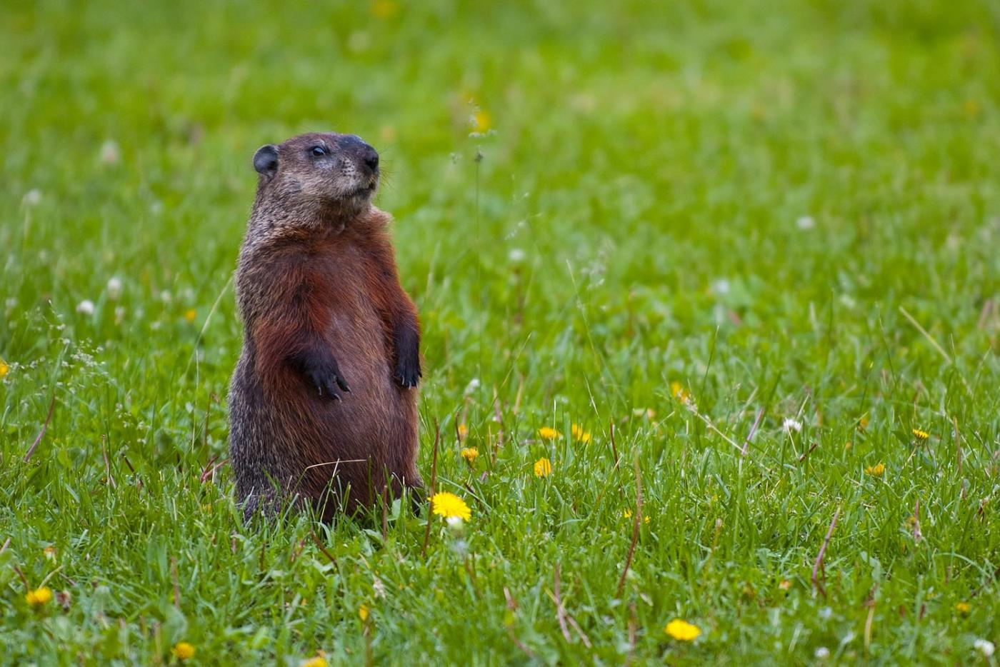

Dive into the life of these quirky and fascinating creatures!
Section 1: Groundhog Basics
Groundhogs (Marmota monax) are large rodents, often weighing between 4 to 9 pounds. As members of the squirrel family, they are known for their impressive burrowing skills and for their role in the folklore surrounding Groundhog Day. These animals are native to North America and prefer to live in fields, forests, and near open woodlands.
Section 2: Behavior and Habits
Groundhogs are most active during the early morning and late afternoon. They are herbivores, feeding on plants, fruits, and vegetables. These animals create complex burrow systems that can extend up to 66 feet in length, with different chambers for sleeping, raising young, and hiding from predators.
During the winter, groundhogs hibernate. Their body temperature drops significantly, and their heart rate slows down to just a few beats per minute. This allows them to survive the cold months when food is scarce.
Section 3: Groundhog Day Legend
Groundhog Day is celebrated on February 2nd in the United States and Canada. According to legend, if a groundhog sees its shadow when it emerges from its burrow, winter will last for six more weeks. If not, spring will come early. The most famous groundhog, Punxsutawney Phil, has been predicting the weather for over 100 years!
Section 4: Groundhogs and the Ecosystem
Groundhogs play
an important role in maintaining the health of their ecosystems. Their burrows provide homes for other animals, such as foxes and rabbits, once abandoned. Additionally, groundhogs help aerate the soil, which can benefit plant growth in the areas where they live.
Closing Section: Want to Learn More?
Whether you're fascinated by their burrowing skills, curious about Groundhog Day, or interested in their ecological role, there's
so much more to explore. Stay tuned for more facts and stories about groundhogs here at Groundhog World!